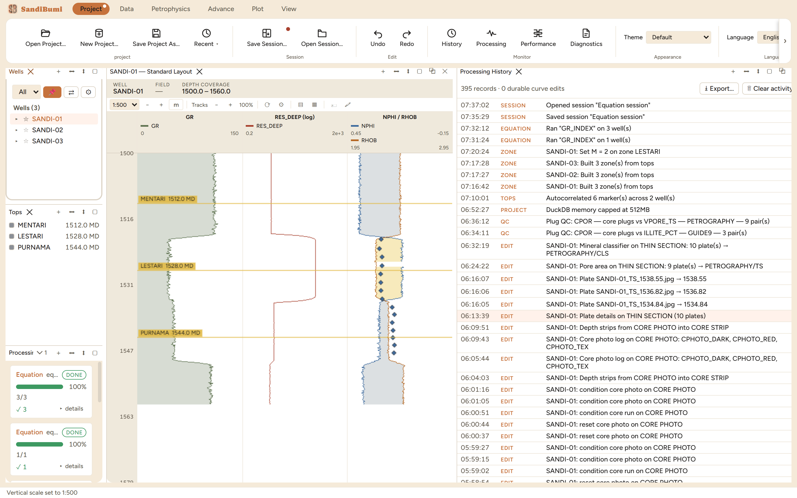

Two panes watch the work from the Project tab's Monitor group, and
they answer different questions. Processing answers "what is
running right now" – live progress per job, the well being worked,
per-well ✓/✗ outcomes, a Cancel button. History
answers "what has been done to this project" – a durable,
timestamped record of every meaningful operation, persisted inside the
project itself and reloaded on every open. Reach for Processing while a
chain runs; reach for History when a number needs its story –
which run made this curve, when did that delivery arrive, what changed
yesterday.
The pane

The example project's record – 395 entries by the time
of this chapter – reading like a lab notebook: sessions saved,
equations run, zones built, markers autocorrelated, deliveries
conditioned, each line tagged by kind and stamped with its well.
Every entry is kind-tagged. The example page alone shows
SESSION, EQUATION, ZONE, TOPS, PROJECT, QC and EDIT entries – so
the record filters by eye: all the zone work, all the QC passes, all
the imports.
Boot events land here too. "DuckDB memory capped at 512MB"
is a PROJECT entry in the figure – one-time events from startup
(migrations, memory caps, recoveries) are recorded where they can be
found later, not printed to a console a built app does not have.
Export… and Clear activity sit at the top; the header
counts the record ("395 records · 0 durable curve edits").
Step by step
Open Project ▸ History for the durable record, or
Project ▸ Processing for live jobs (the Processing pane
also opens itself when a chain starts).
Scroll or export. The record is newest-first; every entry carries
its time, kind, and the well it touched where one applies.
For a long batch, watch Processing: each job card shows progress,
completed wells over total, and expands per-well outcomes under
"details".
Reading the result
The figure's page tells the session's whole story without the person
who drove it: tops were imported and autocorrelated ("Autocorrelated 6
marker(s) across 2 well(s)"), zones were built from them on all three
wells, one zone parameter was set ("Set M = 2 on zone LESTARI"), an
equation ran twice (once on one well, then field-wide), and a session was
saved and reopened. That is what this pane is for – the project
carries its own narrative, so "how did this project get to this state"
is a scroll, not an interview. Entries are recorded by the operations
themselves as they commit, which is why the record and the project never
disagree.
QC and pitfalls
History records operations, not keystrokes. A parameter typed
into a dialog but never run leaves no trace; the entry appears when
the operation commits. Absence of an entry means the operation did
not happen – not that it happened quietly.
Clear activity erases the narrative, not the data. Curves and
versions survive a clear; the story of how they came to be does not.
Export first if the record matters – and for a client project it
usually does.
The Processing pane's per-well details are the triage view. A
chain that reports 98/100 wells names the two failures and the reason
in its details expansion – read those before re-running the
whole chain.